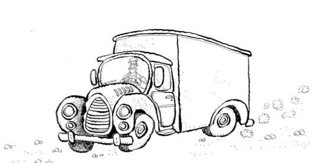

TAŞINMA
İzmir’e taşındığımızda üç yaşıma bile girmemiştim. Hayal meyal hatırladığım ilk görüntüler Balçova’daki evimizdendi; kardeşim doğmuş, bizi sevmiş ve kalmıştı hani. Zaman İzmir’de akıp geçti, bizleri de önüne katıp kovalayarak. Çocuklukta yaşanan pek çok güzel anı birer resim oldu.
Ağustos ayındayız, sıcaktan, meraktan kavrulmuşuz. Kıbrıs Savaşı, ikinci harekât günleri. Yalnızca göz ucuyla değil, benliğimizin boyunun yettiğince radyodan, televizyondan duyduklarımızı, gördüklerimizi anlamaya çalışıyoruz. Fısır fısır bir savaş, kulaktan kulağa yayılıyor olan biten ve ağustos sıcağında İzmir.
Oyunlarımız ağır çekim; içimizden oynamanın gelmediği rolleri bizlere dağıtmışlar da rolümüze isyan eder gibiyiz. Bir şeyler ama her zamanki gibi olmayan bir şeyler oyunlarımıza siniyor, oyunlarımız neşe kokmuyor. Ana babalarımız birkaç ayda onlarca yıl büyümüş gibiler; yüzlerinde gülücük yerine yeller esiyor ve bizler üşüyoruz.
Yazla birlikte savaş da bitiyor, pek çok yaşamı da bitirerek. Savaşı kazanmışız ama lojmandan yakın arkadaşım Canan’ı kaybediyorum; babası Binbaşı Fehmi Ercan Amca’yı Kıbrıs’a emanet edip Ankara’ya taşınıyorlar. Keşke hiçbir şey kazanmak zorunda olmasaydık diye düşünüyorum.
Taşınma işinin çocuklar arasında da konuşulur hâle gelmesi bu günlere rastlar. “Bursa” lafı ağızlarda, kulaklarda geziyor. Öğretmenlerin hepsi gidecek; İzmir’deki Hava Lisesi kapatılıyor. Hatırladığım ne kadar öğretmen varsa olduğu gibi tayinleri çıkmıştı; büyük bölümünün Bursa’ya, diğerlerinin de İstanbul’a. Biz Bursa kervanında olanlardandık.
Lojmana kuzenlerim gelirdi, hep beraber sinemaya giderdik. Hiçbiri filmi bitiremez, uyuyakalırdı. Onlardan biriydi Emel. “Karagöz’le Hacivat Bursa’da” demişti, “Mezarlarında kocaman bir kılıç saplıymış, hâlâ orada duruyormuş!” diye de devam etmişti. Gözlerimi ne kadar açıp ona baktığımı ve ne söylediğimi tam olarak hatırlamıyorum.
Şerif’le taşınma işinin fazla lafını etmezdik. Yaşadığımız bu yere o kadar alışmış ve sevmiştik ki, gözlerimiz bile bir şey anlatmazdı gitmek konusunda.
Bir gün Erdoğan Amca, “Ahmet’le kantine gidip boş karton kutu getirin” dedi Şerif’e. Erlerden birini tembihlemiş, kutu ayıracakmış. Bu sefer ne ok gibi fırladık ne şahin olduk şahlandık, ağır aksak, istemez hâlde kantine doğru yola koyulduk. Ağzımızı bıçak açmıyordu. Sanki yolda birileri bizi görüp, “Hah, işte olacağı buydu! Bunca koşturup tepindiniz, hadi ne hâliniz varsa görün Bursa’da!” diyecekmiş gibi mahzunduk.
Kantine vardık, Erdoğan Amca’nın tembihlediği eri bulduk. Er bize şöyle bir baktı, önce ensesini, sonra güneşten yanmış yüzünü sıvazladı, kepini düzeltti, “Keşke komutanım deseydi, biz eve bırakırdık kutuları” gibisinden mırıldandı. Belli ki bu iki yiğide bir şeyler taşıtmak ona da ağır gelmişti. Bu civanmert gibilerini Kıbrıs dağlarında cirit atıyor diye aklından geçirdiyse de bize bir şey söylemedi (İlk kitaba hâkim olanlar anlayacaklar).
Er, ayırdığı kartonları gösterdi; bazıları benim boyumu bile geçiyor, civanım ne yapsın! Taşıyabileceğimiz şekilde bir tanesini verdi, “Kalanları biz hallederiz” gibisinden bir şeyler söyledi. Boş kutu elimizde, güneş tepemizde eve doğru yürüyoruz. “Bunlara kitapları falan koyarız” dedim, sonra kutuya koymak için kitaptan başka bir şeyin aklıma gelmemiş olmasına şaşırıp sustum. Şerif’im kitap sözünü benden duyunca duygulanıp ağlamadıysa başıma güneş geçtiğini düşünmesindendir.
Babalarımız bazı hafta sonları Bursa’ya gidip ev bakıyorlardı. Aile sohbetlerinde kimin nerelerde ev tuttuğu falan konuşuluyordu. Biz çocuklar olan bitenden o kadar kopuktuk ki, aklımıza “Neden farklı yerlerde ev bulmak zorundasınız?” diye sormak bile gelmiyordu. Sanki bir el hepimizi, yaşadığımız bu yerlerle beraber alıp Bursa’da gene hepimizin birlikte yaşamaktan büyük mutluluk duyacağı bir yere bırakacaktı.
Bir gün, “Ali’m, ben Çekirge taraflarında bir yer buldum” dedi Erdoğan Amca. Babam, “Valla Erdoğan’ım, ben daha arıyorum” diye cevap verdi. Hani, “Bulana kadar buradayız!” der gibi rahat söylemişti babam. Başlarımız bu söz üzerine Erdoğan Amcama çevrildiğinde, “Ali’m, bir an önce bulmak lazım. Bursa’nın kışı sert olur” demişti.
Birkaç hafta içinde babam da Çekirge’de ev tuttuğu haberiyle Bursa’dan geldiğinde artık okullar açılmak üzereydi. Bizim ev neredeyse yarı yarıya toplanmış durumdaydı; etrafta kutular, istiflenmiş paketler.
İlkokul 3. sınıfa yine İzmir’de başladım. Sınıfta dikkatimi çeken ilk şey, bazı arkadaşlarımın olmamasıydı. Sınıf arkadaşlarımdan Mehmet Ali’yi aradı gözlerim. Öğretmenime sordum, “Onlar Eskişehir’e tayin olmuşlar. Babası teknik sınıf subayıydı. Eskişehir’deki hava üssüne gideceklermiş” dedi. Başka arkadaşlarım da gitmiş. İlk defa gördüğüm çocuklar sağımızdaydı, solumuzdaki sıralarla birlikte tam harman yerine dönmüştük. Zaman çocuklukta akmaz gibidir ya, şimdi daha da donmuş gibiydi sanki.
Donmayan bir şeyi keşfetmem için annemin beni kantine yollaması gerekiyormuş. Elime 2 lira tutuşturup, “Git ekmek al” dedi. Kantindeki erle ekmek için arbede yaşamadıysam, yaşımdandır. Beni ekmeğin fiyatının artık 2 lira olduğuna inandırması zaman aldı, çünkü evden onca yolu bir daha dönmek zorunda kalacak olan bendim. Kantindeki birkaç kişi daha, “Oğlum, artık 1 değil, 2 lira ekmek” dedi de, ikna olup ekmekle beraber eve döndüm. Annem zaten bildiği için 2 lira tutuşturmuş elime. Sınıfta eksilme, ekmek fiyatında artış, “Allah sonumuzu hayretsin” demek var ama yaşım henüz dokuz.
3. sınıfın ilk güzelliği ise, cumartesi yarım gün olan derslerin kaldırılmasıydı. Nihayet günler sonrasında güzel bir haber almıştım. Gerçi ettiğim onca duaya karşılık okullar kapanmalıydı ama bu da bir başlangıçtı.
Okullar açılalı bir ayı geçmişti. Babam hafta sonu Bursa’ya taşınacağımızı söylediğinde “bir şeyi kırk kere söylersen olur tabii” gibisinden bir sessizlik oldu.
Arkadaşlarımdan hemen hepsi evlerini taşımışlardı bile. Sanki kalan gözcü bendim ve şimdi ben de elimizdeki toprakları devredip gidecektim. Kalan üç dört gün boyunca, okuldan her geldiğimde uzun uzun lojmandaki oynadığımız yerleri dolaştım. Zakkumlara dokundum, ağaçlara tırmandım, palmiye dallarından yaptığımız kılıçları evdeki odama getirdim. Sanki ne kadar çok gezersem o kadar çok şeyi beraberimde götürecekmişçesine gezip durdum sevdiğim yerlerde.
Bir sabah kamyon geldi kapımıza. Birikmiş o kadar çok şey var ama biz evimizden yalnızca kutulara doldurduğumuz eşyalarımızı kamyona yüklüyoruz. Sapanım, tahta kılıçlarım kaybolmasın diye annemi belki kırk kere tembihledim.
O gün bu günmüş, anladım! Bir yerden âdeta kazınırcasına ayrılmak neymiş, ilk o gün öğrendim. Önce kamyon ayrıldı lojmandan. Kalan birkaç komşuyla son kez vedalaştık ayaküstü ve minibüslerden birine bindik. Güneş, pencereden rahatça görebildiğim kadar inmişti çevreye. Babamın kucağında ben, annemin kucağında kız kardeşim, yan yana oturuyoruz. Minibüs nizamiyeden çıkmak üzereyken babam hüzünlü bakışlarıyla, “Ee, hadi bakalım, elveda lojman” dediğinde, “Nasıl yani, bir daha dönmeyecek miyiz?” dediğimi hâlâ hatırlarım. Babam buruk bir gülümsemeyle bana baktı, sonra pencereden uzaklaştı bakışları.